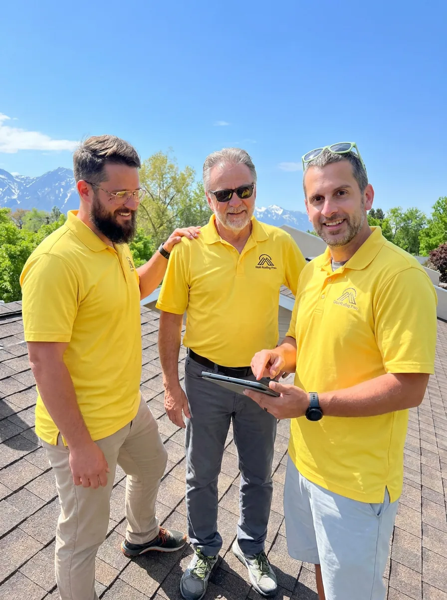
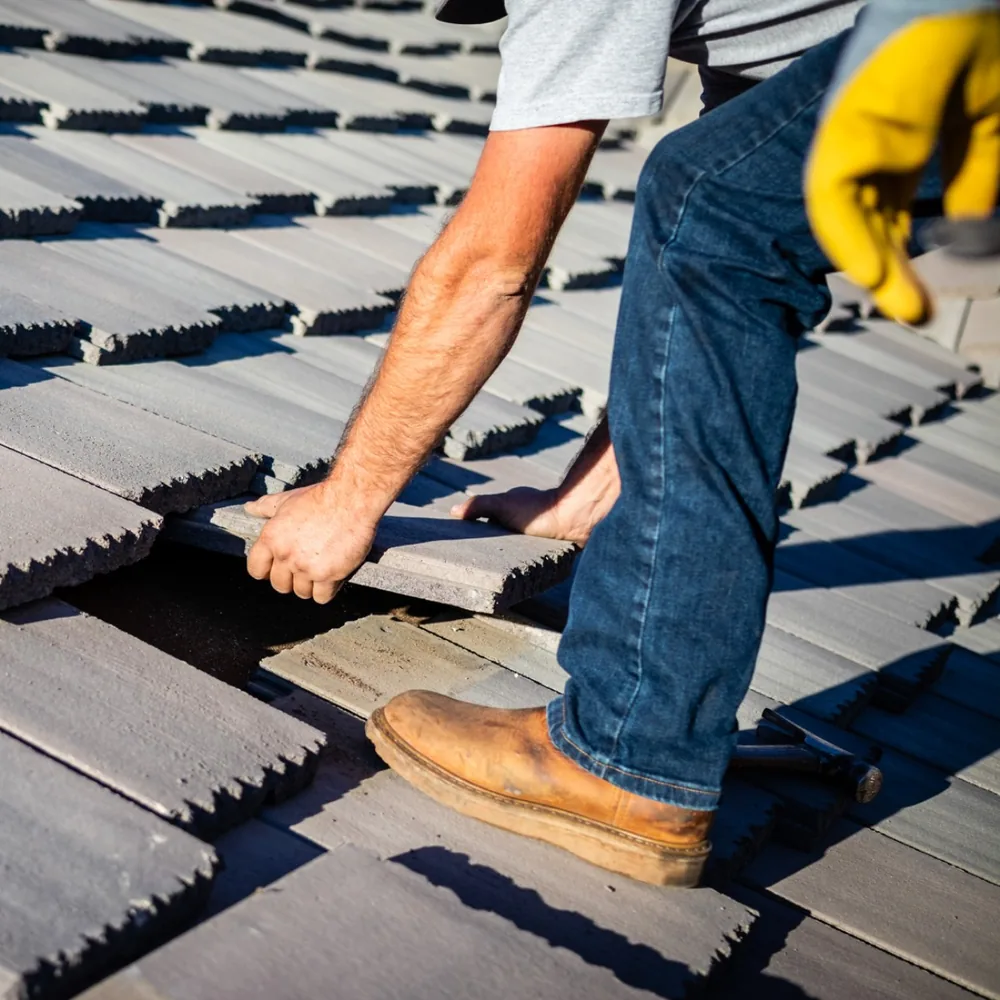

Family-owned · Cottonwood Heights, Utah · Since 2017
The roofing company in Cottonwood Heights that starts with a straight answer.
Utah Roofing Pros is a family-owned roofing company in Cottonwood Heights, founded in 2017 by John and Phil Panos. We repair, replace and install roofs on homes and commercial buildings, help with storm damage and insurance claims, and start every job with a free inspection.

Roofers in Cottonwood Heights
Repair, replace, or neither.
As a roofing contractor in Cottonwood Heights, we look at the roof first and tell you what it actually needs, whether that’s a targeted repair, a new roof, or nothing yet. Already have another bid? We’re happy to give a second opinion.



Where it started
Two roofers, one family name.
Utah Roofing Pros was founded in 2017 by John and Phil Panos: a shared vision between two skilled roofers, based in Cottonwood Heights. The idea has stayed simple: craftsmanship, reliable service and personal attention on every roof, whatever its size.
You’re not another job on the calendar. We treat clients like family, keep you informed, and approach every roof like it’s protecting our own home.
About the companyService areas
From North Ogden to Spanish Fork.
We work in 52 cities across five regions, coordinated from our Cottonwood Heights office. Pick a region, or tap a dot to open that city’s page.
Approximate city positions. I-15 shown for orientation.
Salt Lake Valley
Northern Wasatch Front
Utah County
Wasatch Back
Tooele Area
Field photos
Our crews, our roofs.
Shingle, flat and commercial roofs, from crew phones and the drone. No stock photos.



From the job file
A school roof in South Salt Lake.
Our crew’s job photos from June 2021 show flat-roof membrane work at Saint Ann’s School in South Salt Lake, worked from a boom lift beside the historic brick building, with the Wasatch behind. Flat and low-slope roofs like this are the work our TPO membrane page describes.
Commercial roofing

Storm damage & insurance
We handle the claim so you don’t have to.
Hail, wind and heavy snow can damage a roof in ways you can’t see from the ground. We document it, help you through the insurance process, and do the work.
- 01
Free inspection
We identify the damage and give you a clear overview, with photos.
- 02
File your claim
We help you submit the documentation and answer insurance questions.
- 03
Meet the adjuster
We’re there for the adjuster visit to confirm the scope.
- 04
Claim approval
Once approved, we coordinate timelines and materials.
- 05
Build or repair
Our team gets to work: fast, clean and professional.
- 06
Final walkthrough
We finalize the paperwork and walk the job with you.
Questions
Straight answers.
01Is the roof inspection really free?
Yes. We inspect the roof, document what we find with photos, and explain your options. There’s no charge and no pressure to decide on the spot.
02Do I need a repair or a whole new roof?
Not every roofing problem needs a replacement. A localized leak, flashing problem or damaged seam can often be repaired when the rest of the roof is in good condition. Replacement makes more sense when problems are widespread, the roof is near the end of its life, or repeated repairs stop being economical.
03Do you help with roof insurance claims?
Yes. After storm, hail or wind damage we inspect and photograph the roof, help you file, meet the adjuster, and then build or repair the roof once the claim is approved.
04What causes most roof leaks?
Usually the places where the roof is interrupted: pipe and vent flashing, chimneys, skylights, valleys and old swamp-cooler openings, plus shingles lifted or torn by wind. That’s why we look at the whole roof, not only the wet spot on the ceiling.
05Do you work on commercial buildings?
Yes. We install and repair TPO membrane on flat and low-slope roofs and asphalt shingles on pitched commercial and multi-family buildings.
06Where are you based, and how far do you travel?
Our office is at 2825 E Cottonwood Pkwy #500, Cottonwood Heights, UT 84121. We work across the Salt Lake Valley, the northern Wasatch Front up to North Ogden, Utah County down to Spanish Fork, Park City, Heber City and Tooele.
Free inspection
Get clear answers about your roof.
Book a free inspection. We’ll look at the roof, show you what we find, and explain your options before you decide anything.